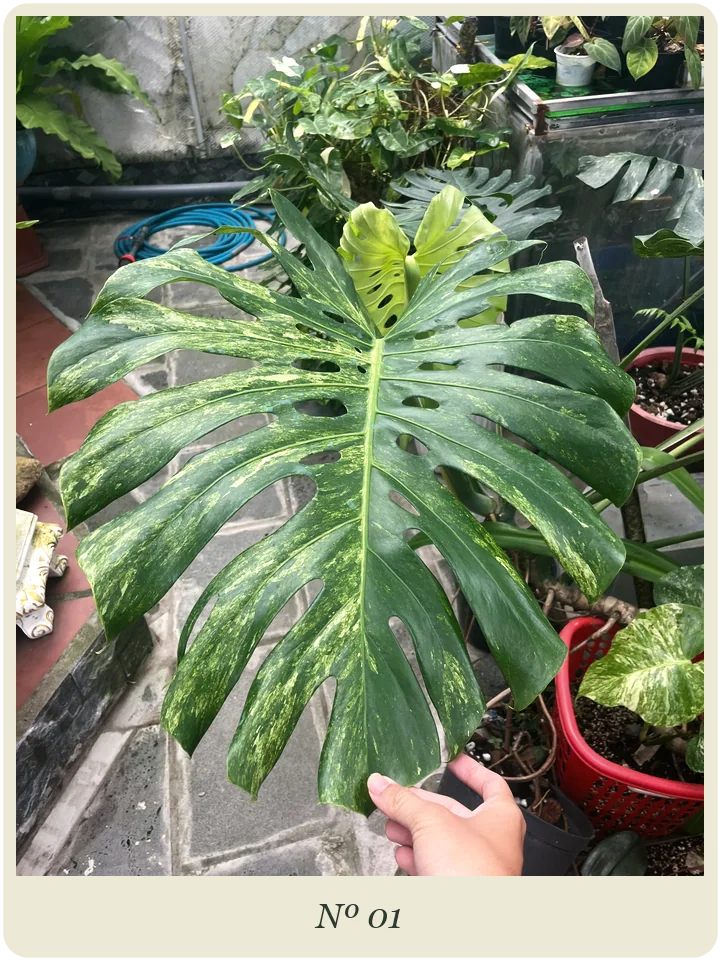
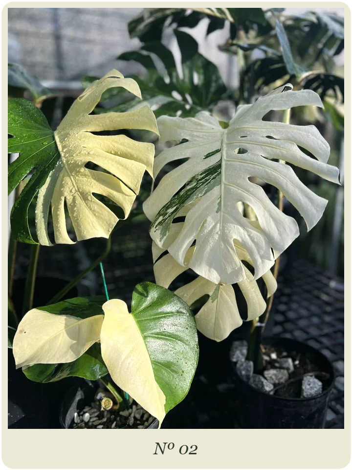
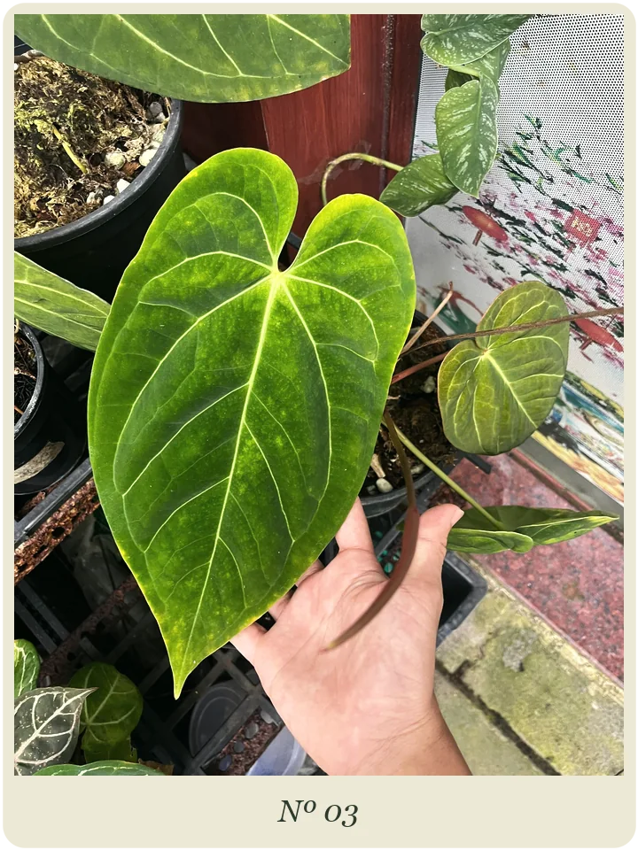
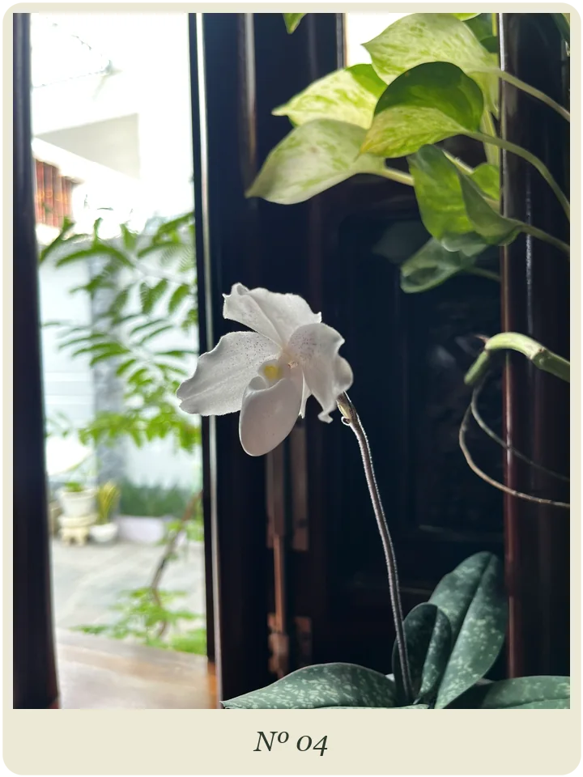

Kiểng lá nhỏ, trồng bằng đam mê. Small foliage, grown for love.
Pam's Garden là vườn kiểng lá nhỏ, làm vì đam mê. Chỉ những cây mình thật sự trồng và yêu. Pam's Garden is a small foliage garden run for passion. Only plants we truly grow and love.
Mỗi chiếc lá là một tác phẩm – Mang hơi thở rừng xanh vào từng góc nhỏ nhà bạn.Every leaf is a work of art – bringing the breath of the green forest into every corner of your home.



